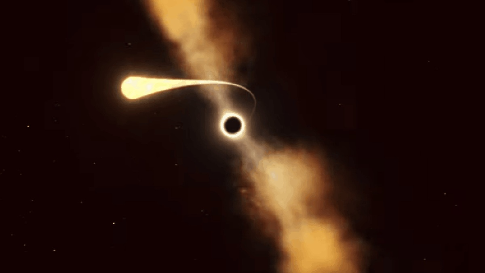

Что случится с объектом, если он упадет в черную дыру?
Спагеттификация (или эффект лапши) — это реальный научный термин! Если объект падает в черную дыру, гравитация действует на его нижнюю часть намного сильнее, чем на верхнюю. Из-за этой колоссальной разницы объект начинает вытягиваться в длинную тонкую линию, словно спагетти.

Интерактивный эксперимент:
Что произойдет, если нажать на эту кнопку и отправить ее в черную дыру?
Проверим знания:
Почему объект вытягивается?